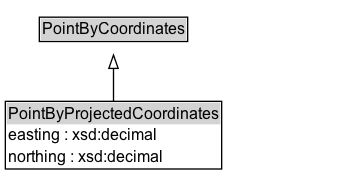

PointByProjectedCoordinates¶
A point location representation encoded as projected coordinates and optional elements, such as elevation and metadata.
Diagram¶

Formalization for PointByProjectedCoordinates¶
| Property | Constraint |
|---|---|
| easting | datatype xsd:decimal |
| northing | datatype xsd:decimal |
| subClassOf | PointByCoordinates |